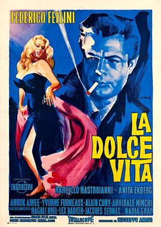

甜蜜的生活 / La dolce vita
又名：露滴牡丹开(港) / 生活的甜蜜(台) / 豪华生活 / The Sweet Life
作品信息
| 导演 | 费德里科·费里尼 |
| 编剧 | 费德里科·费里尼 / 恩尼奥·弗拉亚诺 / 图里奥·皮内利 / 布鲁内洛·龙迪 / 皮埃尔·保罗·帕索里尼 |
| 主演 | 马塞洛·马斯楚安尼 / 安妮塔·艾克伯格 / 阿努克·艾梅 / 伊冯·弗奴克丝 / 玛加莉·诺埃尔 / 阿兰·居尼 / 安尼巴莱·宁基 / 瓦尔特·圣泰索 / 瓦莱里娅·钱戈蒂尼 / 里卡尔多·加罗内 / 伊妲·伽利 / Audrey McDonald / 波利多尔 / Alain Dijon / 米诺·多罗 / 劳拉·贝蒂 / 尼可 / 恩佐·塞鲁西科 / 恩佐·多里亚 / 恩里科·格洛里 / Adriana Moneta / 莱克斯·巴克 / 贾可·塞纳斯 / 娜迪亚·格雷 / 朱塞佩·阿多巴蒂 / Gabriella Andreini / Armando Annuale / 詹尼·巴吉诺 / 伊格纳齐奥·巴尔萨莫 / Leonardo Botta / 法布里齐奥·卡普奇 / 阿德里亚诺·塞兰塔诺 / Andrea De Pino / Oretta Fiume / 妮娜·弗兰克蒂 / 佛朗哥·贾科比尼 / Lily Granado / Sondra Lee / 朱利亚娜·洛约迪切 / 勒妮·隆加里尼 |
| 类型 | 剧情 / 喜剧 |
| 制片国家/地区 | 意大利 / 法国 |
| 语言 | 意大利语 / 英语 / 法语 / 德语 |
| 上映日期 | 1960-02-04(意大利) |
| 片长 | 174分钟 |
| IMDb | tt0053779 |
最后一次看到是 2026-08-12T21:11:26+08:00 · 豆瓣原页